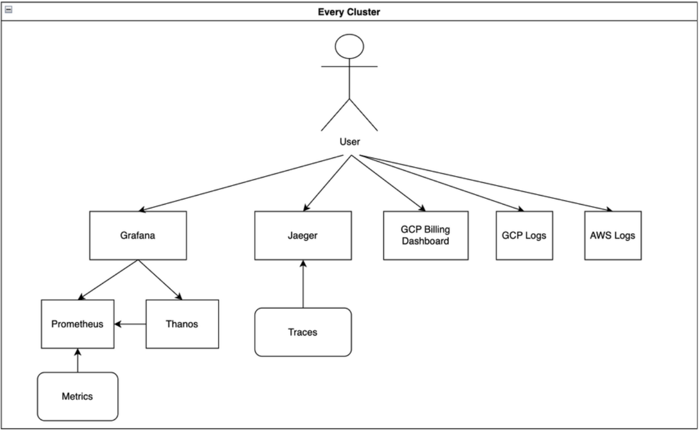
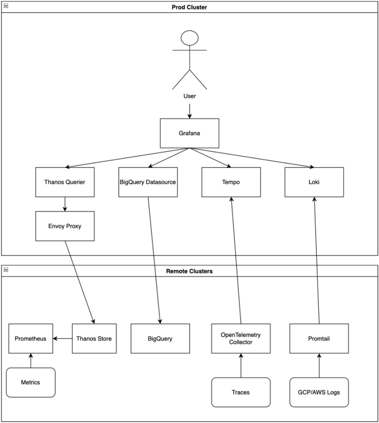

Skills
Languages: Java, Android, C, Python, JavaScript
Cloud Providers: GCP, AWS
IaC Tools: Terraform, Helm
Containerization & Orchestration: Kubernetes, Docker
Monitoring & Observability: Grafana, Tempo, Loki, Jaeger, Prometheus, Thanos, OpenTelemetry Collector
Certifications: AWS Certified Cloud Practitioner, AWS Certified Developer – Associate
Version Control & CI/CD: Git, GitLab CI, GitHub Actions
Work Experience
DevOps Engineer - Tulip
May 2023 - December 2023
- Led the comprehensive redevelopment of a multi-cloud, highly available monitoring stack, achieving a unified single pane of observability using Grafana, Tempo, Loki, Prometheus, and other open-source monitoring tools.
- Enhanced deployment methodologies through the utilization of Helm and Terraform, contributing to a robust CI/CD pipeline. This experience significantly deepened my knowledge of Kubernetes and its ecosystem.
- Established and optimized infrastructure in the AWS China region, showcasing expertise in navigating and addressing unique challenges specific to the Chinese cloud environment
- Participated in the on-call rotation, diagnosing and resolving issues outside of regular business hours.
Software Developer - Voice Directed Tally Systems Inc.
January 2022 - August 2022
- Led a three-person team to develop a front-end voice activated Android application for an assisted reality headset (HMT)
- Worked with the team to develop several other frontend applications as well as Java backend services.
- Assisted the team in documenting requests and creating plans for changes or additions required by various clients.
Projects
- Ride Requestor (2022) - Used AWS Lambda, Amazon API Gateway, Amazon DynamoDB, Amazon Cognito, and AWS Amplify Console to create a simple serverless web application that allowed users to register for an account and request rides
- Banking Chatbot (2022) - Used Amazon Lex and AWS Lambda to create a banking customer service chat bot that allowed the user to check the balance of their (theoretical) chequing or savings account.
- Grafana-Stack Helm Chart (2024) - Automated deployment of a comprehensive monitoring stack on Kubernetes using Helm, seamlessly integrating Grafana with Tempo, Loki, and Prometheus datasources.
Education
University of Guelph - B. Eng. Computer Engineering (Co-op)
Expected Graduation: April 2024
About Me
As I approach the end of my Computer Engineering journey at the University of Guelph, I am impassioned by the realms of DevOps, cloud technologies, AI, and software development. With a track record of project leadership, both in professional settings and academic environments, I thrive in collaborative teams where my enthusiasm and curiosity align with my peers. My comfort in dynamic environments is complemented by an eagerness to confront challenges that not only expand my knowledge but also sharpen my skills.
What sets me apart is my unwavering commitment to continuous learning. This dedication is underscored by my ability to swiftly acquire proficiency in new technologies, exemplified by my attainment of two AWS Certifications.
One of my notable accomplishments is the comprehensive redevelopment of a distributed monitoring stack. The initial architecture, though functional, required users to navigate disparate pages for debugging, leading to diminished visibility.
In the re-imagined design, depicted in the simplified diagram below, users can now seamlessly access metrics, logs, and traces for all projects from a unified interface.

Additionally, I integrated a BigQuery datasource for effortless visualization of billing data for GCP projects. The resultant single-pane observability empowers developers to expedite issue resolution and maintain heightened service visibility.

Looking ahead, post-graduation, my aspirations extend to furthering my journey in a DevOps role, while remaining open to diverse and exciting opportunities.
About This Project
This project demonstrates the deployment of a simple static website, containing some information about me! Built with HTML and CSS for simplicity and speed, the site is deployed on Google Cloud Platform (GCP) using Terraform for infrastructure automation and Cloud DNS for domain management. GitHub Actions automates the deployment workflow, enabling seamless updates to the website's content and infrastructure with every push to the repository.
This project is still in progress. The next feature I intend to add is a visitor counter!
Contact Information
I'm currently seeking opportunities in DevOps and would love to connect! Feel free to reach out through any of the following channels:
- Email: kade.w.bc@gmail.com
- LinkedIn: Visit my profile
- GitHub: kade-eng